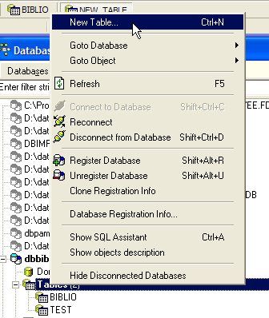
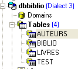
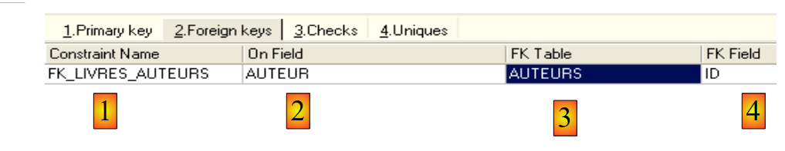
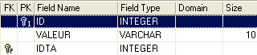
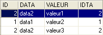

5. Relationships between tables
5.1. Foreign keys
A relational database is a set of tables linked together by relationships. Let’s take an example inspired by the previous [BIBLIO] table, which had the following structure:

An example of the content was as follows:

You might want information about the various authors of these works, such as their first and last names, date of birth, and nationality. Let's create such a table. Right-click on [DBBIBLIO / Tables] and select the [New Table] option:

Now let’s create the following [AUTHORS] table:
 |  |
primary key of the table—used to uniquely identify a row | |
author's last name | |
author's first name, if applicable | |
date of birth | |
country of origin |
The contents of the [AUTHORS] table could be as follows:

Let’s return to the [BIBLIO] table and its contents:
In the [AUTHOR] column of the table, it is no longer necessary to enter the author’s name. Instead, it is preferable to enter the ID number assigned to them in the [AUTHORS] table. Let’s create a new table called [BOOKS]. To create it, we will use the [biblio.sql] script created in section 3.14. We run this script using the [Script Executive, Ctrl-F12] tool:

We modify the script for creating the BIBLIO table to adapt it to the BOOKS table:
We will only comment on the changes:
- line 4: the [AUTHOR] column in the table becomes an integer. This number references one of the authors in the previously created [AUTHORS] table.
- Lines 11–19: The authors’ names have been replaced by their author IDs.
- line 29: the constraint name has been changed. It was previously called [UNQ1_BIBLIO]. It is now called [UNQ1_LIVRES]. This name can be anything. However, it is preferable that it be meaningful. Here, this effort was not made. Constraints on different fields and different tables within a database must be distinguished by different names. Recall that the constraint on line 29 requires that a title be unique within the table.
- Line 36: Change the name of the constraint on the primary key ID.
Let’s run this script. If it succeeds, we get the following new [BOOKS] table:
 |  |
One might wonder if we’ve actually gained anything in the end. Indeed, the [BOOKS] table lists author numbers instead of their names. Since there are thousands of authors, linking a book to its author seems difficult. Fortunately, SQL is here to help us. It allows us to query multiple tables at the same time. For this example, we present the SQL query that lets us retrieve the titles of the books in the library, along with their authors’ information. Let’s use the SQL editor (F12) to execute the following SQL statement:
SQL> select BOOKS.title, AUTHORS.last_name, AUTHORS.first_name, AUTHORS.date_of_birth
FROM BOOKS inner join AUTHORS on BOOKS.AUTHOR=AUTHORS.ID
ORDER BY AUTHORS.last_name ASC
It is too early to explain this SQL query. We will come back to it shortly. The result of this query is as follows:

Each book has been correctly matched with its author and the associated information.
Let’s summarize what we’ve just done:
- we have two tables containing different types of information:
- the AUTHORS table contains information about authors
- the BOOKS table contains information about the books purchased by the library
- these tables are linked to each other. A book must have an author. It may even have several. This scenario has not been considered here. The [AUTHOR] field in the [BOOKS] table references a row in the [AUTHORS] table. This is called a relationship.
The relationship between the [BOOKS] table and the [AUTHORS] table is actually a type of constraint: a row in the [BOOKS] table must always have an author ID that exists in the [AUTHORS] table. If a row in [BOOKS] had an author ID that does not exist in the [AUTHORS] table, we would be in an abnormal situation where we would not be able to find the author of a book.
The DBMS is capable of ensuring that this constraint is always satisfied. To do this, we will add a constraint to the [BOOKS] table:
 |  |  |
The link connecting the [AUTHOR] column in the [BOOKS] table to the [ID] field in the [AUTHORS] table is called a foreign key relationship. The [AUTHOR] field in the [BOOKS] table is called a "foreign key" in the wizard above. Defining a foreign key means that the value of a column [c1] in a table [T1] must exist in column [c2] of table [T2]. Column [c1] is referred to as the "foreign key" of table T1 on column [c2] of table [T2]. Column [c2] is often the primary key of table [T2], but this is not mandatory.
We define the foreign key [AUTHOR] of table [BOOKS] on the field [ID] of table [AUTHORS] as follows:
 |
- constraint name: free
- "foreign key" column, here the [AUTHOR] column of the [BOOKS] table
- table referenced by the foreign key. Here, the [AUTHOR] column in the [BOOKS] table must have a value in the [ID] column of the [AUTHORS] table. Therefore, the [AUTHORS] table is the referenced table.
- Column referenced by the foreign key. Here, the [ID] column of the [AUTHORS] table.
We validate this constraint:

If all goes well, it is accepted:

What is the consequence of this new foreign key constraint? Using the SQL editor (F12), let’s try to insert a row into the BOOKS table with a non-existent author ID:

The [INSERT] operation above attempted to insert a book with a non-existent author ID (100). The query execution failed. The associated error message indicates that there was a violation of the foreign key constraint "FK_BOOKS_AUTHORS". This is the one we just defined.
5.2. Join operations between two tables
Still in the [DBBIBLIO] database (or any other database), let’s create two test tables named TA and TB and define them as follows:
Table TA
 - ID: primary key of table TA - DATA: arbitrary data |  |
Table TB
 - ID: primary key of the TB table - IDTA: foreign key of the TB table that references the ID column of the TA table. Thus, a value from the IDTA column of the TA table must exist in the ID column of the TA table - VALUE: any data |  |
In the SQL editor (F12), we will execute SQL statements that simultaneously use both the TA and TB tables.

The SQL statement uses the FROM keyword to reference both the TA and TB tables. The FROM TA, TB operation will cause a new temporary table to be created, in which each row of the TA table will be joined with each row of the TB table. Thus, if the TA table has NA rows and the TB table has NB rows, the resulting table will have NA x NB rows. This is shown in the screenshot above. Furthermore, each row contains the columns from both tables. The columns specified in the order [SELECT col1, col2, ... FROM ...] indicate which ones to include. Here, the * keyword indicates that all columns of the resulting table are requested. The resulting table from the previous SQL statement is sometimes referred to as the Cartesian product of tables TA and TB.
Above, each row of table TA has been associated with each row of table TB. Generally, we want to associate a row of TB with a row of TA that has a relationship with it. This relationship often takes the form of a foreign key constraint. This is the case here. To a row in table TA, we can associate the rows in table TB that satisfy the relationship TB.IDTA=TA.ID. There are several ways to query this:
The previous SQL statement is similar to the previous one, with two differences:
- the result rows of the TA x TB Cartesian product are filtered by a WHERE clause that associates with a row in table TA only those rows in table TB that satisfy the relationship TB.IDTA=TA.ID
- only certain columns are requested using the syntax [T.col], where T is the name of a table and col is the name of a column in that table. This syntax resolves any ambiguity that might arise if two tables had columns with the same name. When this ambiguity does not exist, the syntax [col] can be used without specifying the table for that column.
The result is as follows:

The same result can be obtained with the following SQL statement:
The term [inner join] gives rise to the name "inner join" given to this type of operation between two tables. We will see that there is also an "outer join." In an inner join, the order of the tables in the query has no effect on the result: FROM TA inner join TB is equivalent to FROM TB inner join TA.
The previous SQL order includes in the result set only those rows from table TA that are referenced by at least one row from table TB. Thus, the row [3, data3] in TA does not appear in the result because it is not referenced by a row in TB. You may want all rows from TA, whether or not they are referenced by a row in TB. In that case, you use a left outer join between the two tables:

Here we have a left outer join. To understand the term "FROM TA left outer join TB," imagine a join with the TA table on the left and the TB table on the right. All rows from the left table appear in the result of a left outer join, even those for which the join condition is not met. This join condition is not necessarily a foreign key constraint, although that is the most common case.
In the following order:
the TB table is on the "left" side of the outer join. Therefore, all rows from TB will appear in the result:

Unlike an inner join, the order of the tables matters here. There are also right outer joins:
- FROM TA LEFT OUTER JOIN TB is equivalent to FROM TB RIGHT OUTER JOIN TA: the TA table is on the left
- FROM TB LEFT OUTER JOIN TA is equivalent to FROM TA RIGHT OUTER JOIN TB: the TB table is on the left
Now that we understand the basics of querying multiple tables simultaneously, we can move on to more complex database queries.